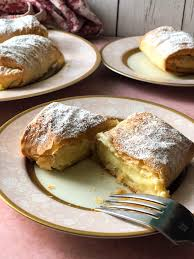

INGREDIENTS
- 4 1/4 cups milk
- sliced peel of 1 lemon
- 3/4 cup semolina
- 4 eggs
- 2 cups sugar
- 1/4 teaspoon vanilla extract
- 12 sheets filo pasty
- 1 cup butter, melted

INSTRUCTIONS
- Warm the milk and lemon peel in a saucepan.
- Stir in semolina with a wooden spoon until the mixture is thoroughly blended and thickened.
- In a mixing bowl, beat the eggs, sugar and vanilla until light and add to the pan.
- Now, stir over medium-low heat until it reaches a creamy custard consistency.
- Remove from heat, take out and discard lemon peel and allow to cool completely.
- Stir occasionally to keep the custard from forming a skin on top.
- Lightly brush a baking pan equivalent to the size of the filo with butter.
- Line the bottom of the pan with 8 sheets of filo.
- Brush each sheet well with the melted butter after laying it down in the pan.
- Add the custard filling.
- Fold the excess filo that overlaps the pan in over the custard.
- Top with the remaining filo, brushing each with butter.
- Use a knife to trim the top sheets to the size of the pan.
- Spray the top lightly with water and bake at 180 degrees C for 30-40 minutes, until the top is golden brown.
- Sprinkle with icing sugar and cinnamon while hot. Cut to size and serve.
- Kali orexi!